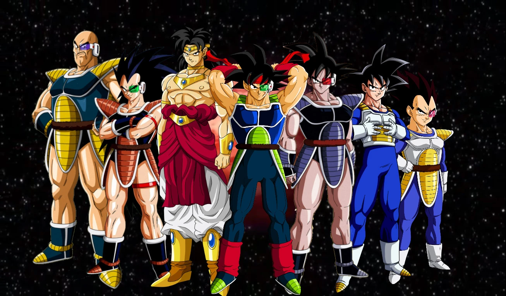
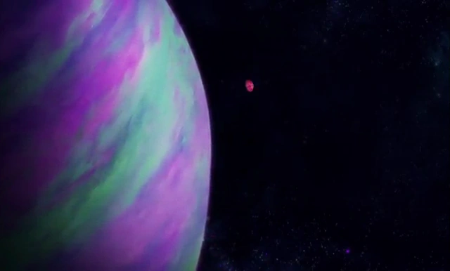

Historia de raza
┌─────── ∘°❉°∘ ───────┐
Los saiyanos (サイヤ人, Saiya-jin) son una de las razas ficticias de guerreros más fuertes que existe en la serie de Dragon Ball; habitaban el Planeta Vegeta hasta su destrucción a manos de Freeza, el emperador del espacio.
La mayoría de los saiyanos estaban preparados exclusivamente para las batallas y su mejor característica era la resistencia demostrada en varias ocasiones.
└─────── °∘❉∘° ───────┘
Origen
Los saiyanos son provenientes del planeta Sadala, el cual fue destruido tras una guerra civil. Todo indica que tras la destrucción de aquel planeta, un grupo de saiyanos pudo huir al Planeta Plant en el año 550 en unas naves (o una nave, según Dragon Ball GT Perfect Files. Los Tsufur encontraron aquellas naves en mal estado, con los saiyanos en su interior.
Habilidades(Niveles de supersaiyajin)

( Sūpāsaiyajin?), también llamado Super Saiyajin Ordinario en el doblaje latino, es la primera fase de la transformación. Se alcanza cuando el guerrero ha entrenado bastante y ha aumentado su poder y sufre un arrebato intenso de ira . Pero la transformación debe ser iniciada por una necesidad más que por el simple deseo de transformarse. Los cambios físicos son evidentes: El cabello del individuo se eriza y cambia a un color amarillo junto con la cola si es que la posee, los ojos se vuelven azules verdosos y la fuerza del guerrero aumenta 50 veces y si conserva su cola también puede volverse amarillenta
Supersaiyajin Dai San Dankai

Supersaiyajin Dai San Dankai Tercera etapa?) o ultra supersaiyajin, es la transformación superior al supersaiyajin dai ni dankai, es muy fuerte y con esta transformación Trunks sobrepasó los poderes de Cell perfeccionado, pero sin embargo, sus músculos le crecen bastante y esto hace que el guerrero pierda velocidad, esa es la razón porque Trunks no pudo haber acabado con Cell, esta transformación es muy similar al supersaiyajin legendario de Broly, el pelo se eriza bastante y la apariencia cambia bastante en comparación a la transformación anterior, y la fuerza aumenta bastante, pero lo único que disminuye es la velocidad del guerrero debido al uso excesivo de ki.
Supersaiyajin Full Power
Supersaiyajin Full Power o antiguamente fue llamado como Supersaiyajin Dai Yon Dankai (Cuarta etapa?) o supersaiyajin poder total: Es el dominio definitivo de la forma del supersaiyajin 1, sin ser necesario pasar por las etapas Ascendidos y Ultra. Al permanecer transformado durante largos períodos de tiempo, el supersaiyajin puede desintonizarse a los efectos negativos de la transformación. Sus emociones se mantienen bajo control, resultando en un estilo de lucha más estratégico, y el consumo de ki se reduce a cantidades insignificantes. La radiación de energía se reduce y el aura se emite en un flujo suave.

Al dominar la transformación, el supersaiyajin es capaz de mantenerse transformado casi inconscientemente. La clave de este estado, es la conservación de energía en vez de liberarla. El resultado; es un saiyajin que es capaz de luchar más tiempo y más eficientemente que con las etapas de ascendido y ultra supersaiyajin, e incluso puede permanecer transformado por días sin tener que destranformarse, siempre y cuando no gaste demasiada energía, pudiendo incluso dormir transformado.
Supersaiyajin Fase 2
Es la verdadera forma en que supera al supersaiyajin ordinario. El verdadero nombre de esta transformación recién se nombró en la saga de Majin Boo cuando Goku mostró el Supersaiyajin 3 a Boo ya que en la saga de Cell no se sabía realmente como se llamaba y solamente era la forma que superaba al Supersaiyajin Ordinario como lo decía Gokū. Es la transformación directa a la primera transformación de supersaiyajin. Es muy similar a la forma original, en la apariencia y la forma de obtenerla, pero con determinadas diferencias en lo físico y en el poder. Para obtener esta transformación es necesario dominar la transformación Full Power y una vez en ella repetir el proceso inicial de conversión, es decir acceder a un estado de ira que supere los parámetros máximos posibles para el sujeto (en palabras simples es necesario transformarse en Super saiyajin estando ya como supersaiyajin full power) o con un intenso entrenamiento en supersaiyajin full power.

El guerrero que obtenga el estado supersaiyajin 2 tendrá el cabello más erizado que en la fase 1 y éste será de un color amarillo más intenso, sus ojos serán verdes aguamarina y el aura del supersaiyajin despedirá relámpagos azules o dorados y las cejas se ponen más duras. El poder del estado Full Power se incrementa 2 veces, aumentando la fuerza y velocidad. La primera vez que se obtiene el guerrero tiene energía adicional que puede ser usada en ataques de energía que no cansaran. El guerrero puede llegar a ser supersaiyajin 2 con un entrenamiento intenso (como Gokū o Vegeta) o en otro arrebato de ira (como Gohan).
Supersaiyajin Fase 3
Supersaiyajin es la tercera forma de supersaiyajin, sucesora de las primera y segunda. El propósito de la transformación del supersaiyajin 3 es aumentar la utilización del ki, y como resultado, la transformación consume rápidamente la energía del usuario. Esto, conduce a niveles prolongados de fatiga, incluso después de que el usuario acabe la transformación. Si el usuario ha muerto y no está con un cuerpo vivo, esta dificultad se reduce un poco, y el agotamiento de la energía adicional se reduce al mínimo, aunque se hace mucho más evidente si está en el mundo de los vivos.

La diferencia entre supersaiyajin 3 y supersaiyajin 2, es inmediatamente perceptible, ya que la velocidad, fuerza y resistencia son llevados más allá de los límites normales. La transformación de supersaiyajin 3 aumenta 4 veces la fuerza de un supersaiyajin 2 dicho por el mismo Akira Toriyama (Hace falta un entrenamiento intenso en supersaiyajin 2 para alcanzar este nivel). Sin embargo, con el enorme poder, hay algunas consecuencias muy graves, a raíz de la rápida utilización de la energía. La transformación genera profundos cambios en la apariencia física; la característica más llamativa de la transformación es el cabello del usuario: el pelo rígido del supersaiyajin 3 se hace más fluido y crece hacia abajo a veces pasando la cintura del usuario
Supersaiyajin Dios
Esta transformación aparece por primera vez en la película Dragon Ball Z: La Batalla de los Dioses y más tarde en el manga y en anime Dragon Ball Super, continuación oficial de Dragon Ball Z. Esta es la forma que supera a la transformación que en ese momento era la más poderosa que era el Super Saiyajin 3. Esta es lograda por Gokū al ser el punto de unión de los poderes de cinco saiyajin de corazón puro y bueno. Para lograr esta transformación se requirió la energía de Vegeta, Gohan, Goten, Trunks y Videl, quien en ese momento estaba embarazada de Pan, y ya que solo había cuatro saiyajin para dar su energía se optó por intentar usarla. En este estado el cabello, cejas, iris y el aura de Gokū se vuelven totalmente rosa rojizo, la masa muscular se reduce un poco y sin mayores cambios físicos.

Super Saiyajin Dios Blue
Goku posee tonos azules o azul verdoso, en el caso de Vegeta su apariencia es la misma que en estado normal pero con pelo azul con tonos verdosos más claros. Si ambos luchaban juntos, cubrían sus deficiencias, que Goku es muy relajado, actúa antes que pensar y deja su cuerpo expuesto a ataques simples y Vegeta se pone muy rígido y calcula todo durante la pelea.

En pocas palabras, ambos necesitan el equilibrio para dominar este estado al 100%. Existe dos métodos para alcanzar el SSJ blue el primero consiste en trasformarse en SSJ dios y absorber su poder luego el usuario debe aprender a canalizar dicho poder en el super saiyan, el segundo consiste en entrenar con un maestro que domine el ki divino como Wiss
Mensiones honorificas
Estas trandformaciones no las explico a profundidad ya que son variaciones de los super saiyajin o no son parte de cannon oficial de Dragon Ball
Super Saiyajin Rose

Legendario Súper Saiyajin

Super Saiyajin fase 4